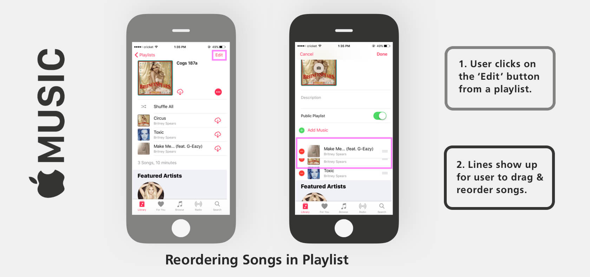
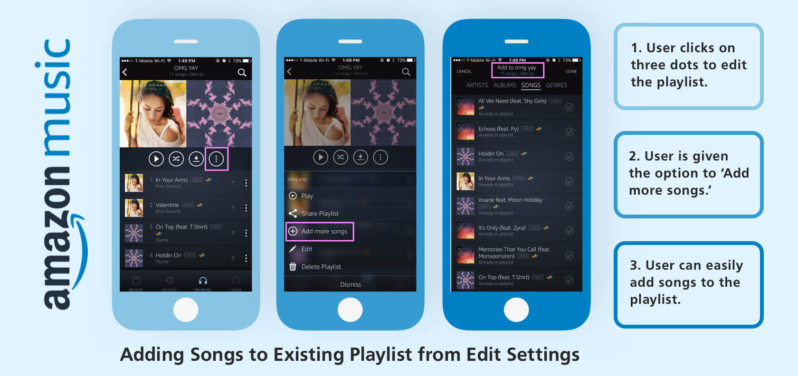
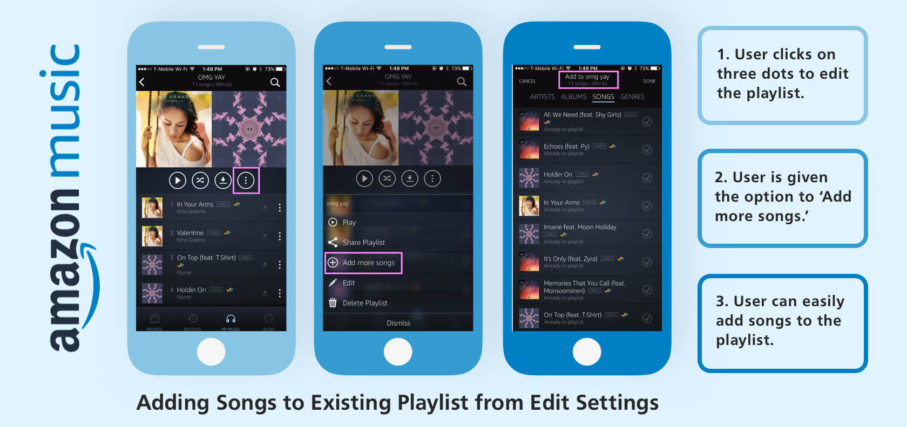
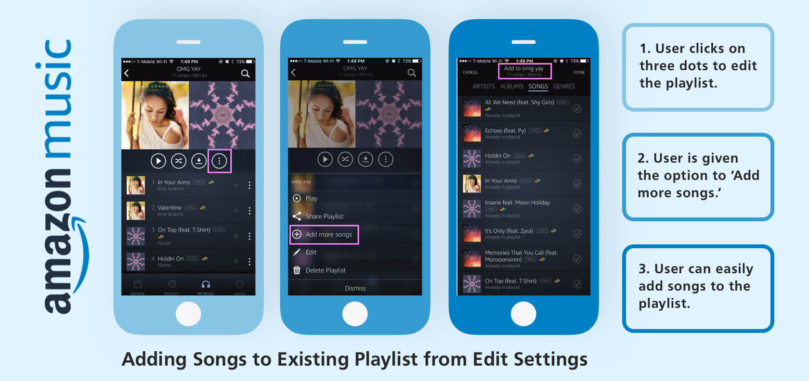

Context
Type: Learner Experience Design
Duration: June 2018 - Feb 2019
Team: Patty, Charity, Armando, Steve
Topic: eCommerce Category Management
Learning Evolution strives in successful client relations with impactful certified courses. I carried out various tasks for different clients, instructors, and internal projects.
Some other projects include UI redesign for LE's
LMS and Category Analyst course, and designing Titleist Golf Ball course on Adapt.
Feel free to ask me more about these projects!
For this specific case study, we'll be exploring the main project I worked on: eCommerce Category Management Curriculum.
With emergence of eCommerce, the retail industry has changed the way merchandising works.
There's been a need switch onto a new process for the science of placing it, the Category Management 2.0.
Type: Learner Experience Design
Duration: June 2018 - Feb 2019
Team: Patty, Charity, Armando, Steve
Topic: eCommerce Category Management
For this specific case study, we'll be exploring the main project I worked on: eCommerce Category Management Curriculum. With emergence of eCommerce, the retail industry has changed the way merchandising works. There's been a need switch onto a new process for the science of placing it, the Category Management 2.0.
Problem
How might we build an innovative course for a comprehensive topic while engaging the learners?
For category managers and its team as a whole, it is now important to learn their new responsibilities as retailers move from brick & mortar onto eCommerce. The goal of the course is to provide a fun educational experience of the holistic process, while maintaining the real-world setting of the workplace. Patty and I ideated the concept of graphic novel characters with different roles (manager, analyst, marketing, insights) and a conversational content strategy. As the material is lengthy and complex, we planned a thought-out design process to launch a reliable, usable and meaningful curriculum to the public.
Role
Position
- Multimedia & Web Intern
- UI/UX Designer
Tools
- Authoring Tools
- Sketch
- Adobe Suite
- SVN & Box
- Zoho
Skills
- Market Research
- Content Strategy
- Visual Design
- Interface Design
- Prototyping
process


1st phase
Roles & Resources
We first learned about dominKnow’s capabilities to familiarize ourselves with the learning methods we can utilize. With a better approach of blended learning, DominKnow is fairly customizable and gives many possibilities in terms of interface designing, responsiveness, and collaboration.
CONSTRAINTS
Technology: Use of certain features are glitchy and thus time-consuming
Uncertainty: Not knowing if clients will be happy with the pop-art look
Structure: Segmenting the curriculum with such comprehensive material requires time and review
Our internal team primarily consisted of three. I worked closely with Armando, who took care of the narrative side of storytelling, and Patty, who managed the whole project. She worked closely with a category management expert to gain reliable course information. Through many meetings, we conducted content curation, such as Amazon and Peapod’s way of evaluating category performance.
Learner Personas
By understanding the roles and environment of the CATMAN team, we leaned towards situated learning to involve an authentic context. We made note of the knowledge and skills in the way they learn every day and created 4 possible learner personas.


Select to zoom
2nd phase
User Flows
Since compiling user scenarios, our redesign drew on aspects that we found well-designed from other music applications that use playlists. We constructed these ideas from comparing different workflows from those scenarios within different applications, (i.e. matching the playlist workflows from Spotify to those of Apple Music, Soundcloud, and Amazon Music). We created user flows based on creating a playlist from existing playlists.

 


We also analyzed competitors' navigation structures and genre classifications. With a clearer understanding of how users can discover and navigate through different music streaming services, we found out that Spotify lacks the ability to combine pre-existing playlists. Also, though it's still an ongoing debate, we justified based on our research data that swiping left and presenting a confirmation pop-up will be more convenient and less time-consuming for users.

Wireframes
Rough sketching was essential as we went through many iterative phases of ideating and learning from the obstacles we faced. Since our goal was to redesign based on users' preferences, we wanted to make sure to emphasize user control and freedom by implementing undo, cancel, and/or back buttons on every page throughout the process of creating a mix. We wanted to convey that users should always be able to fix their mistakes or change their minds.
Below you can zoom in to see how our ideas transformed through wireframing and prototyping.

{kind=link}
{kind=link}
{kind=link}
{kind=link}
3rd phase
Interaction Design
With our 'New Mix' interactive prototype, users can create a playlist from songs chosen from Spotify's algorithms: Your Recommendations, Your Playlists, and/or Genres & Moods. As a way to expedite the process to curate a desired playlist, users are able to easily and efficiently filter the songs inside a playlist to search for specific tracks (i.e. by Title, Most Played, etc.).
Design Decisions
For a better and easier way to explore our ‘New Mix’ design, the Deleting process was separated from the interactive prototype and converted to an animation format. Below you'll see how to interact with the new "Playlist" navigation component and our redesign of deleting a song or multiple songs.